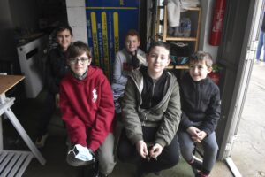

Le seul endroit où l'on ne peut pas tricher. Apprendre à lire la piste, pas juste à tourner le volant.
Votre enfant va passer une journée entière sur un vrai circuit, avec un vrai moniteur champion de France, et en repartira avec un chrono personnel, un debrief, et une compréhension de ce qu'il fait au volant. Pas une impression — une réalité mesurable.

Le pilotage, ce n'est pas appuyer sur les pédales dans le bon ordre. C'est comprendre ce que la piste vous dit — et y répondre avant qu'elle vous impose sa réponse.
JB enseigne la trajectoire comme un choix, le freinage comme un outil, la vitesse comme une conséquence. Pas comme des objectifs en soi.
Ces bases — les pilotes professionnels ne les oublient jamais. Elles sont posées ici, dès le premier jour.
Une structure pensée pour que chaque heure construise sur la précédente. Pas des sessions de roulage répétées — une progression réelle.
JB répond personnellement sous 24h. Sessions disponibles pendant les vacances scolaires et sur demande hors-saison. Places limitées — 8 pilotes maximum par journée.
5 niveaux structurés. JB évalue à l'arrivée — et vous dit où vous en êtes vraiment.
Toutes les prestations disponibles sur la boutique officielle — karting, stages voiture, coaching, loges.